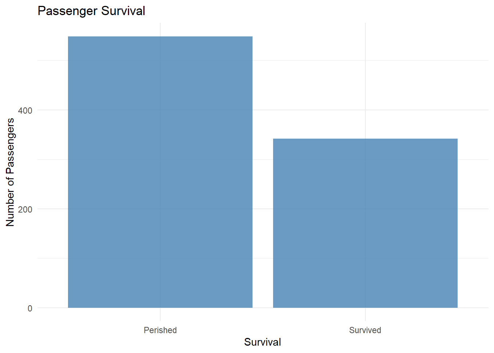
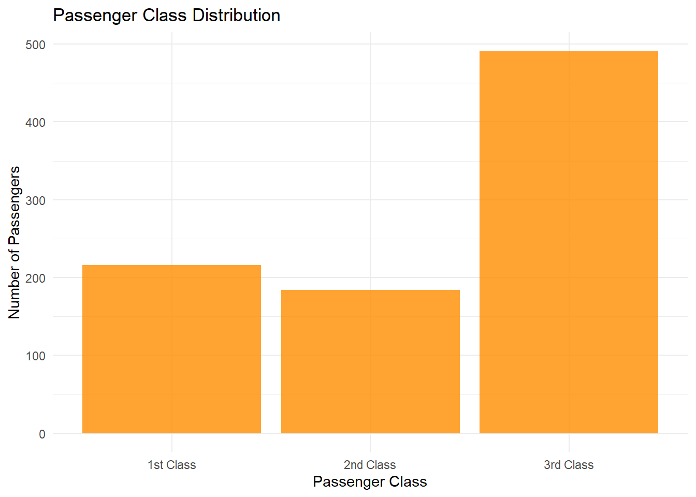
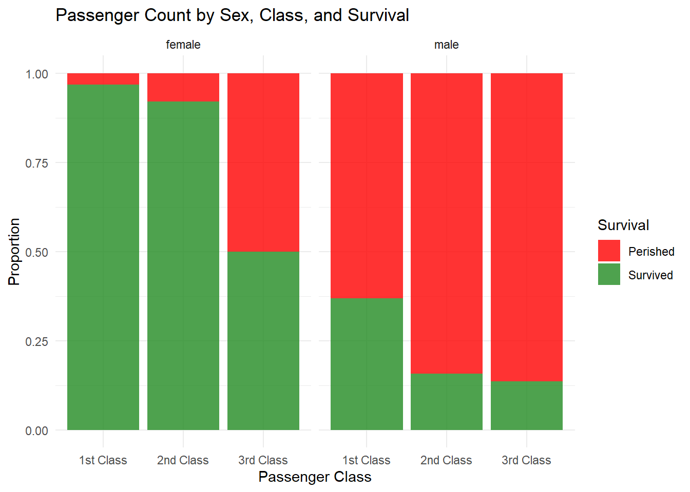
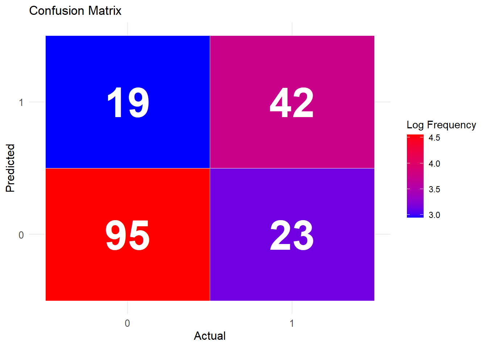

PassengerId Survived Pclass
1 1 0 3
2 2 1 1
3 3 1 3
4 4 1 1
5 5 0 3
6 6 0 3
Name Sex Age SibSp Parch
1 Braund, Mr. Owen Harris male 22 1 0
2 Cumings, Mrs. John Bradley (Florence Briggs Thayer) female 38 1 0
3 Heikkinen, Miss. Laina female 26 0 0
4 Futrelle, Mrs. Jacques Heath (Lily May Peel) female 35 1 0
5 Allen, Mr. William Henry male 35 0 0
6 Moran, Mr. James male NA 0 0
Ticket Fare Cabin Embarked
1 A/5 21171 7.2500 S
2 PC 17599 71.2833 C85 C
3 STON/O2. 3101282 7.9250 S
4 113803 53.1000 C123 S
5 373450 8.0500 S
6 330877 8.4583 Q
# Check the structure of the datasetstr(titanic_train)
'data.frame': 891 obs. of 12 variables:
$ PassengerId: int 1 2 3 4 5 6 7 8 9 10 ...
$ Survived : int 0 1 1 1 0 0 0 0 1 1 ...
$ Pclass : int 3 1 3 1 3 3 1 3 3 2 ...
$ Name : chr "Braund, Mr. Owen Harris" "Cumings, Mrs. John Bradley (Florence Briggs Thayer)" "Heikkinen, Miss. Laina" "Futrelle, Mrs. Jacques Heath (Lily May Peel)" ...
$ Sex : chr "male" "female" "female" "female" ...
$ Age : num 22 38 26 35 35 NA 54 2 27 14 ...
$ SibSp : int 1 1 0 1 0 0 0 3 0 1 ...
$ Parch : int 0 0 0 0 0 0 0 1 2 0 ...
$ Ticket : chr "A/5 21171" "PC 17599" "STON/O2. 3101282" "113803" ...
$ Fare : num 7.25 71.28 7.92 53.1 8.05 ...
$ Cabin : chr "" "C85" "" "C123" ...
$ Embarked : chr "S" "C" "S" "S" ...
# Get summary statisticssummary(titanic_train)
PassengerId Survived Pclass Name
Min. : 1.0 Min. :0.0000 Min. :1.000 Length:891
1st Qu.:223.5 1st Qu.:0.0000 1st Qu.:2.000 Class :character
Median :446.0 Median :0.0000 Median :3.000 Mode :character
Mean :446.0 Mean :0.3838 Mean :2.309
3rd Qu.:668.5 3rd Qu.:1.0000 3rd Qu.:3.000
Max. :891.0 Max. :1.0000 Max. :3.000
Sex Age SibSp Parch
Length:891 Min. : 0.42 Min. :0.000 Min. :0.0000
Class :character 1st Qu.:20.12 1st Qu.:0.000 1st Qu.:0.0000
Mode :character Median :28.00 Median :0.000 Median :0.0000
Mean :29.70 Mean :0.523 Mean :0.3816
3rd Qu.:38.00 3rd Qu.:1.000 3rd Qu.:0.0000
Max. :80.00 Max. :8.000 Max. :6.0000
NA's :177
Ticket Fare Cabin Embarked
Length:891 Min. : 0.00 Length:891 Length:891
Class :character 1st Qu.: 7.91 Class :character Class :character
Mode :character Median : 14.45 Mode :character Mode :character
Mean : 32.20
3rd Qu.: 31.00
Max. :512.33
Visualizations of the dataset
Example 1: Bar plot of passenger survival
titanic_train %>%ggplot(aes(x =factor(Survived))) +geom_bar(fill ="steelblue", alpha =0.8) +scale_x_discrete(labels =c("Perished", "Survived")) +labs(x ="Survival", y ="Number of Passengers", title ="Passenger Survival") +theme_minimal()

Example 2: Bar plot of passenger class distribution
titanic_train %>%ggplot(aes(x =factor(Pclass))) +geom_bar(fill ="darkorange", alpha =0.8) +scale_x_discrete(labels =c("1st Class", "2nd Class", "3rd Class")) +labs(x ="Passenger Class", y ="Number of Passengers", title ="Passenger Class Distribution") +theme_minimal()

Example 3: Box plot of passenger age by class and survival
titanic_train %>%ggplot(aes(x =factor(Pclass), y = Age, fill =factor(Survived))) +geom_boxplot(alpha =0.8) +scale_fill_manual(values =c("red", "forestgreen"), labels =c("Perished", "Survived")) +scale_x_discrete(labels =c("1st Class", "2nd Class", "3rd Class")) +labs(x ="Passenger Class", y ="Age", fill ="Survival", title ="Passenger Age by Class and Survival") +theme_minimal()
Example 5: Stacked bar plot of passenger count by sex, class, and survival
titanic_train %>%ggplot(aes(x =factor(Pclass), fill =factor(Survived))) +geom_bar(position ="fill", alpha =0.8) +scale_fill_manual(values =c("red", "forestgreen"), labels =c("Perished", "Survived")) +scale_x_discrete(labels =c("1st Class", "2nd Class", "3rd Class")) +facet_wrap(~ Sex) +labs(x ="Passenger Class", y ="Proportion", fill ="Survival", title ="Passenger Count by Sex, Class, and Survival") +theme_minimal()

Machine learning models
Generalized linear model
1: Data preparation
# Handle missing valuestitanic_train$Age[is.na(titanic_train$Age)] <-median(titanic_train$Age, na.rm =TRUE)titanic_train$Embarked[is.na(titanic_train$Embarked)] <-"S"# Encode categorical variablestitanic_train$Sex <-as.numeric(factor(titanic_train$Sex))titanic_train$Embarked <-as.numeric(factor(titanic_train$Embarked))# Split the data into training and validation setsset.seed(42)train_indices <-sample(1:nrow(titanic_train), 0.8*nrow(titanic_train))train_data <- titanic_train[train_indices, ]validation_data <- titanic_train[-train_indices, ]
2: Fit the GLM
# Fit the generalized linear modelglm_model <-glm(Survived ~ Pclass + Sex + Age + SibSp + Parch + Fare + Embarked,family =binomial(link ="logit"),data = train_data)# Display the model summarysummary(glm_model)
Call:
glm(formula = Survived ~ Pclass + Sex + Age + SibSp + Parch +
Fare + Embarked, family = binomial(link = "logit"), data = train_data)
Deviance Residuals:
Min 1Q Median 3Q Max
-2.7103 -0.5730 -0.4213 0.6235 2.4326
Coefficients:
Estimate Std. Error z value Pr(>|z|)
(Intercept) 8.216870 0.867387 9.473 < 2e-16 ***
Pclass -0.953919 0.157760 -6.047 1.48e-09 ***
Sex -2.848769 0.222540 -12.801 < 2e-16 ***
Age -0.040603 0.009132 -4.446 8.74e-06 ***
SibSp -0.333486 0.116989 -2.851 0.00436 **
Parch -0.051301 0.132078 -0.388 0.69771
Fare 0.003387 0.002771 1.222 0.22152
Embarked -0.190803 0.131183 -1.454 0.14581
---
Signif. codes: 0 '***' 0.001 '**' 0.01 '*' 0.05 '.' 0.1 ' ' 1
(Dispersion parameter for binomial family taken to be 1)
Null deviance: 951.69 on 711 degrees of freedom
Residual deviance: 620.98 on 704 degrees of freedom
AIC: 636.98
Number of Fisher Scoring iterations: 5
3: Evaluate the model
# Predict on the validation setvalidation_data$predicted_prob <-predict(glm_model, validation_data, type ="response")validation_data$predicted_class <-ifelse(validation_data$predicted_prob >0.5, 1, 0)# Calculate accuracyaccuracy <-mean(validation_data$predicted_class == validation_data$Survived)accuracy
[1] 0.7653631
4: Confusion matrix visualization
# Create confusion matrixconfusion_matrix <-confusionMatrix(as.factor(validation_data$predicted_class), as.factor(validation_data$Survived))# Create confusion matrix plotcm_plot <-ggplot(data =as.data.frame(confusion_matrix$table), aes(x = Reference, y = Prediction)) +geom_tile(aes(fill =log(Freq)), color ="white") +geom_text(aes(label = Freq), color ="white", fontface ="bold", size =15) +scale_fill_gradient(low ="blue", high ="red") +theme_minimal() +theme(axis.title =element_text(size =12),axis.text =element_text(size =10)) +labs(x ="Actual", y ="Predicted", fill ="Log Frequency", title ="Confusion Matrix")cm_plot

5:ROC curve visualization
# Calculate the ROC curveroc_obj <-roc(validation_data$Survived, validation_data$predicted_prob)